IWD:EE Portrait Variations
A mod for Icewind Dale: Enhanced Edition that gives you more options for enjoying the awesome portraits in the game.
| Version: | 1.3 |
|---|
| Languages: | language-independent (mod content); English (installer/readme) |
|---|
| Platforms: | Windows, Mac OS X, Linux |
|---|
| Author: | Ineth |
|---|
| Links: | forum thread • download page |
|---|
Installation
Extract the contents of the mod archive into your game folder, and then:
Compatibility and Installation Order
There are no known conflicts with other mods, and it should be safe to install this at any point in the mod install order.
You don't have to start a new game for the changes to take effect.
Components
Zoomed-in side bar portraits
This component modifies all the built-in portraits, to make their small versions (which are displayed along the right edge of the main game screen) zoomed in closer and more consistently on the characters' faces.
It also flips them where necessary to make sure no characters are facing the screen edge.
See the FAQ and Appendix for details.
Photoshopped variations
This component adds a few additional portraits which I photoshopped from built-in ones - either to make them suitable for other races and classes (e.g. Cleric weapon replaced with Mage weapon), or for cosmetic changes (e.g. hair color).
The variations appear right after the corresponding original in the in-game portrait selection screen.
See the Appendix for details.
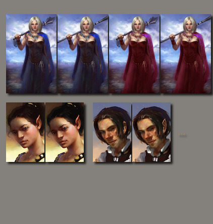
FAQ
Q: Does "Zoomed-in side bar portraits" affect custom portraits?
A: No, it only replaces the built-in portraits with zoomed-in versions.
(If you're looking for custom portraits that are cropped in the same style, have a look at my collection of Icewind Dale style portraits.)
Q: Does "Zoomed-in side bar portraits" affect the large character-record-screen portraits?
A: No, only the ones that are shown in the right side-bar of the main game screen.
Q: Why does "Zoomed-in side bar portraits" flip some portraits?
A: The original Icewind Dale game, which the portraits were painted for, placed the portrait bar along the bottom edge of the screen. However, the Enhanced Edition of the game switched to a vertical portrait bar along the right screen edge, and the few portraits that show a character facing right-ward look a bit weird in that position. Flipping them ensures that they face the open area instead of the screen edge.
Feedback, Credits & Copyright
If you have praise, criticism, or suggestions for this mod, please leave a comment in the forum thread linked at the top of this document.
If you want to contribute, one way would be to translate this document to another language and post it in the aforementioned forum thread, so that I can include it in the next release of the mod.
Special thanks go to:
- Jason Manley and Justin Sweet, for painting these great portraits back in the day for the original Icewind Dale game.
- Beamdog, for releasing the Enhanced Edition of the game, which renewed my interest in it.
Tools used in the making of this mod:
Copyright:
All image files included in this package are based on game content from Icewind Dale: Enhanced Edition released by Beamdog and Atari. Beamdog is okay with content from their games being used in mods (within reason).
The bundled WeiDU installer is licensed under the GPL.
As far as my work on this mod is concerned, I license it under the CC BY 4.0 license. This means that you are free to redistribute the mod, or modify and republish it, or repurpose any part of it for your own mods etc., as long as you give attribution.
Version history
1.3 – May 2018
- Added support for IWD:EE v2.5.
- Improved some existing variations and zoomed-in portraits in minor ways.
- Updated WeiDU to version 245.
1.2 – March 2017
- Added 1 photoshopped variation (GMTb).
- Improved some existing variations and zoomed-in portraits in minor ways.
- Renamed files to include my modder prefix.
- Updated WeiDU to version 240.
1.1 – April 2016
- Added 1 photoshopped variation (HFFb).
- Smoothed over sharpening artifacts in some of the zoomed-in portraits.
- Updated WeiDU to version 239.
1.0 – January 2016
Appendix
Zoomed-in side bar portraits - complete list
Photoshopped variations - complete list
EFF - "Elf Female Fighter 1"
- original
- with black hair + better contrast
HFF - "Human Female Fighter 1"
- original
- wielding a mace [suitable for a Fighter/Cleric]
2MBAR1 - "Male Barbarian 1"
- original
- zoomed in
- zoomed in + wielding scimitars [suitable for a Fighter/Druid]
HEFC - "Half-elf Female Cleric 1"
- original
- wielding a staff [suitable for a Wizard]
- red dress
- red dress + wielding a staff [suitable for a Wizard]
HMC2 - "Human Male Cleric 2"
- original
- better color balance
HFW3 - "Human Female Wizard 3"
- original
- without the sword & bow [suitable for a Druid]
GMT - "Gnome Male Thief 1"
- original
- with pointed ears [suitable for a Gnome]


 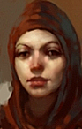
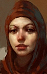  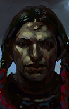
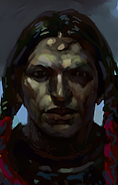  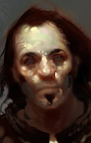
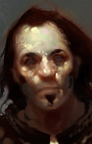 

 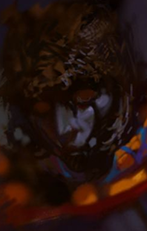 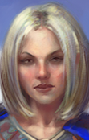
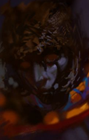 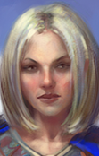 


 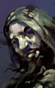
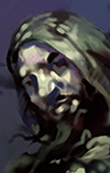 


 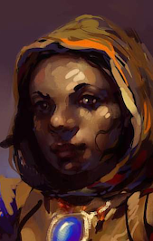
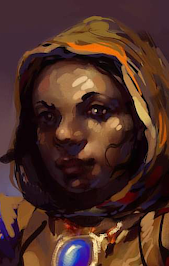